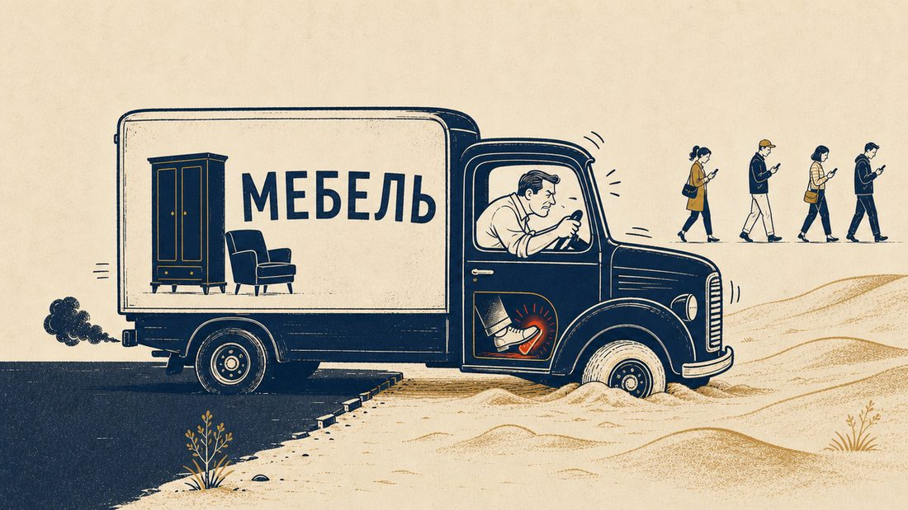
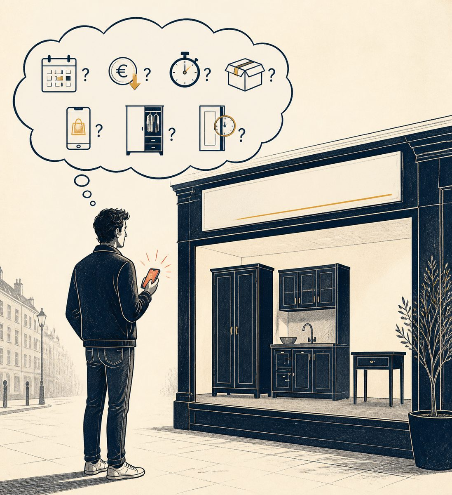
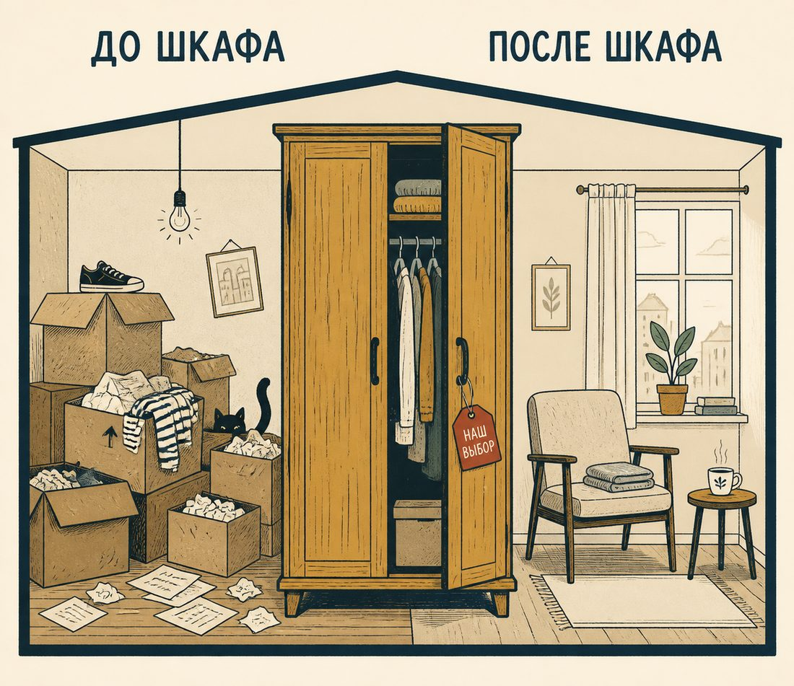
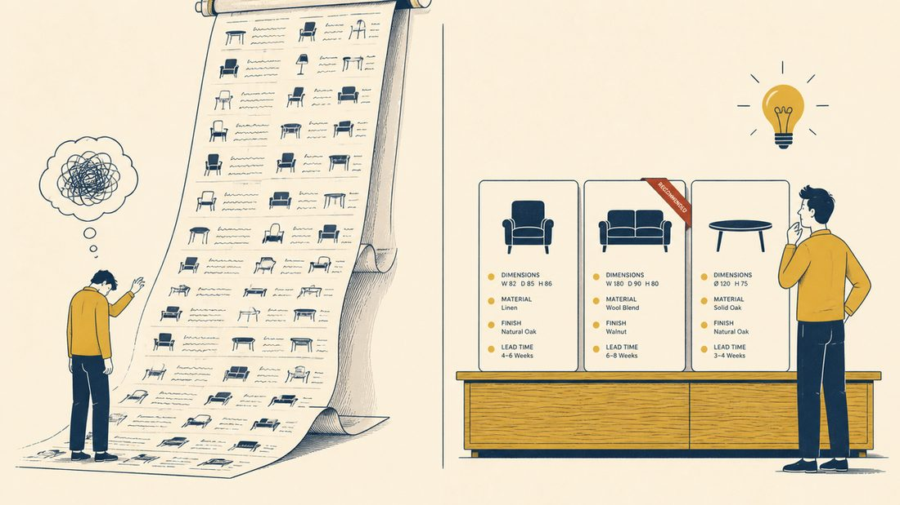
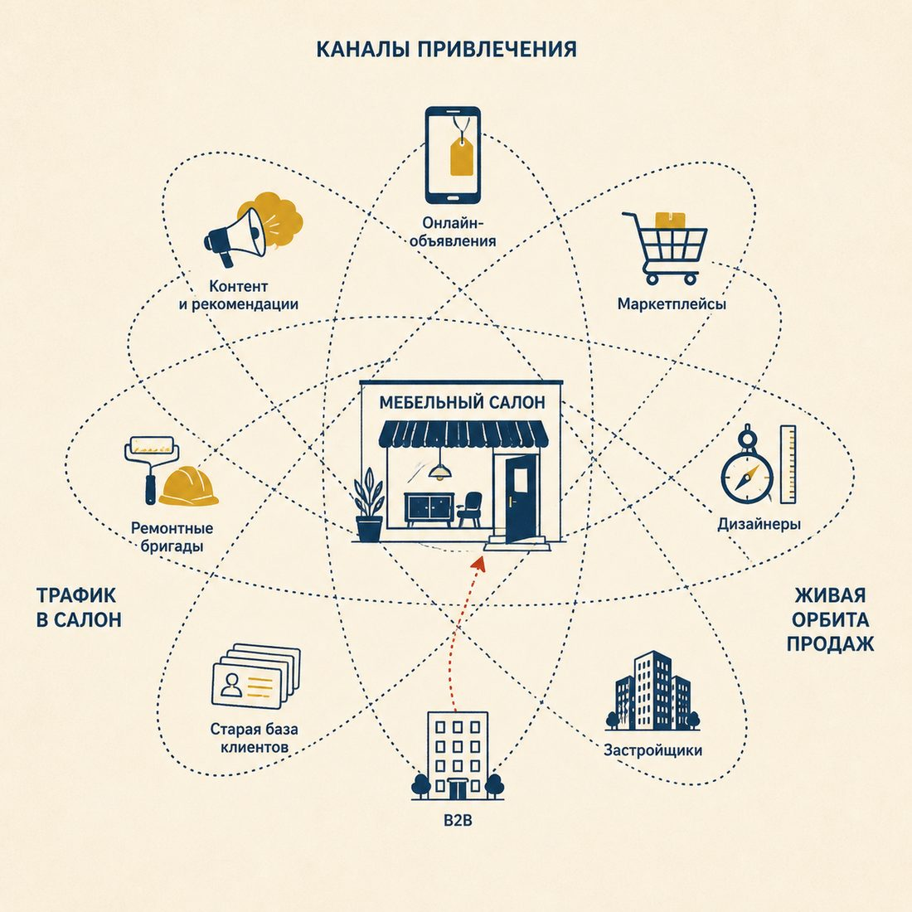
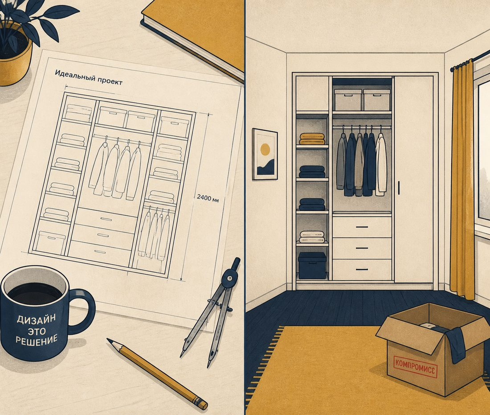

Маленькое предисловие, без которого статью легко прочитать не так
У многих собственников мебельных компаний сейчас, простите за грубое слово, полная задница. Это надо сказать в самом начале, потому что без этого предупреждения дальнейший текст легко принять за бодрую методичку из тех, что собственники по утрам читают, а вечером пересылают сотрудникам с подписью «обратите внимание». Этот текст - не методичка.
У меня нет готового рецепта для вашей конкретной компании. Я не знаю, что именно сделать вашему салону на конкретной улице, в конкретном городе, при вашем конкретном ассортименте, с вашими конкретными людьми, чтобы через две недели всё стало нормально. Если бы я это знал, я бы не публиковал бесплатных статей в Дзене, я бы выписывал дорогие рецепты дорогим клиентам, ездил по фабрикам на чём-нибудь приличном и говорил с владельцами с другой интонацией. Это, кстати, не плохо и не хорошо, это просто разные жанры.
Мои статьи - это топливо. Другой угол зрения, попытка расширить горизонт мышления, повод посмотреть на свою компанию глазами, чуть менее замыленными ежедневной операционкой. Прочитать, не согласиться, поспорить, согласиться частично, найти в чужом примере свою историю. А потом долго и нудно адаптировать всё это под собственную реальность, где у вас не «мебельная компания вообще», а конкретные люди, конкретный регион, конкретный ассортимент и совершенно конкретный кризис конкретного четверга.

Это же правило относится и к остальным статьям цикла: и про то, что в кризис нужно не «лучше», а проще, и про дорогую отмазку «нет времени», и про то, что сотруднику надо показывать его собственный шанс, а не свою собственную тревогу. Ни один из этих текстов не написан в логике «сделай ровно так, и пойдут продажи». Все они написаны в логике «посмотри на это вот с такой стороны и реши сам, что с этим делать». Если бы было иначе, ценность статей упала бы примерно до ценности промокода на скидку.
Теперь, когда мы договорились о жанре, можно к делу.
Главная неприятная мысль
Продажи мебели падают не потому, что покупатели внезапно разлюбили шкафы, кухни, столы и диваны. Люди по-прежнему живут в квартирах, готовят на кухнях, спят в кроватях и хранят вещи в шкафах, а не в философском вакууме. Никакого общенационального отказа от мебели не произошло и, кажется, в обозримой перспективе не предвидится.
Изменилось другое, и почти всё сразу. Покупатель стал осторожнее, деньги для него стали дороже, решение тянется дольше, ошибиться стало страшнее, сравнить варианты сделалось проще одного движения пальца, а отложить покупку под любым предлогом и удобнее, и привычнее. Всё это копилось не за один день и не одним фронтом, но в сумме даёт принципиально другую конструкцию покупательского поведения.
При этом многие мебельные компании продолжают вести себя так, словно рынок просто временно капризничает и вот-вот успокоится: тот же ассортимент, те же акции, те же продавцы, те же скрипты, те же залежавшиеся остатки и ровно те же разговоры на планёрках в духе «надо больше лидов, надо поднять конверсию, надо дать скидку, надо потерпеть до сезона». В качестве принципиально нового шага можно ещё поставить у входа шамана с рулеткой и бубном. По моему опыту, помогает примерно так же.
Главный вывод выглядит грубо, но я в нём за годы работы только укрепился: в кризис мебельщикам нужно не сильнее давить на старую педаль, а менять саму конструкцию продаж, ассортимента и управления. Потому что, как ни крути, ничего не изменится, если ничего не изменится. Тавтология здесь не от косноязычия моего, а от природы явления.
Почему старые действия перестали давать старый результат
Раньше у мебельного бизнеса было несколько привычных опор. Магазин давал поток, реклама давала лиды, салон убеждал красивыми образцами, продавец принимал заказ, производство изготавливало, клиент терпеливо ждал, компания жила, владелец смотрел в будущее с умеренным оптимизмом. Система была не идеальная, но рабочая, особенно когда у людей водились свободные деньги, ипотека двигала ремонты, а покупатель был готов терпеть долгие сроки, мутные расчёты и фирменное «ну, это надо считать индивидуально», за которым обычно следовало неприятное удивление.

Сейчас эта конструкция даёт сбои сразу в нескольких точках. Не потому, что кто-то конкретный плохо работает, не потому, что продавцы разучились продавать, не потому, что маркетолог снова «не туда залил бюджет» (хотя, что скрывать, и такое бывает), а потому что изменилась внешняя среда. И не временно, как многим хочется верить, а, по всем признакам, всерьёз и надолго.
Покупатель стал осторожнее. Он уже не спрашивает себя только «нравится или не нравится». В голове у него теперь тихо живёт длинный список других вопросов: точно ли это нужно прямо сейчас, можно ли дешевле, можно ли быстрее, можно ли купить готовое, можно ли взять на маркетплейсе, можно ли заменить не всю мебель, а только часть, можно ли вообще ничего пока не делать и подождать. На каждый из этих вопросов он сначала ищет ответ сам, а уже потом, может быть, разговаривает с вашим менеджером, и то не факт.
И вот здесь начинается главная управленческая ловушка. Мебельщик видит падение продаж и почти инстинктивно пытается решить его усилением старых действий: было мало лидов - надо больше рекламы, плохо покупают - надо скидку, мало заказов - надо заставить продавцов активнее звонить, падает маржа - надо сильнее давить на расходы, не хватает денег - надо срочно продать остатки, не работает канал - надо ещё немного потерпеть, авось вырулим. Логика понятная и в спокойные времена правильная, в кризис почти всегда обманчивая.
Если сама модель перестала соответствовать рынку, усиление старых действий только ускоряет уставание компании. Можно очень энергично бежать не туда, и некоторые умудряются делать это с KPI, диаграммами, еженедельной отчётностью и регулярными мотивационными планёрками. Финал у такой пробежки, к сожалению, типовой.
Что на самом деле нужно изменить
Если совсем коротко, мебельной компании в кризис нужно изменитьтри вещи. Я знаю, что прозвучит это до обидного просто, но за внешней простотой обычно прячется самая трудная часть работы.
Первое - предложение клиенту. Надо продавать не мебель вообще, а понятное Решение конкретной проблемы конкретного покупателя.
Второе - модель каналов. Нельзя дальше жить только за счёт салона, входящего трафика и тихой надежды на то, что «сезон вытащит, он же всегда вытаскивал».
Третье - управленческий ритм. Вместо редких больших решений нужны короткие циклы проверки гипотез по схеме «попробовали, измерили, оставили или выбросили без обид».
Разберём по порядку, потому что без разбора это останется красивой картинкой на стене переговорной, рядом с распечатанной миссией компании.
1. Меняем предложение: клиент покупает не мебель, а снижение тревоги
Мебельщики часто думают, что они продают шкаф, кухню, диван, стол или спальный гарнитур. Формально - да, по документам - да, в каталоге - тоже да, но в голове клиента покупка устроена совершенно иначе, и эта другая логика в кризис проявляется сильнее, чем когда-либо.
Он покупает не шкаф, он покупает возможность перестать жить среди коробок. Он покупает не кухню, он покупает нормальную жизнь после ремонта, в которой можно наконец готовить, а не пробираться к плите через стройплощадку. Он покупает не стол, он покупает рабочее место, где можно не сходить с ума на удалёнке между холодильником и кошкой. Он покупает не детскую, он покупает комнату, где ребёнок спит, учится и не воюет с родителями за каждый ящик. Он покупает не прихожую, он покупает возможность открыть входную дверь и не увидеть маленький склад обуви, курток и семейного отчаяния.

В кризис эта разница становится решающей. Когда денег у покупателя много, он может позволить себе выбирать эмоционально - «красиво», «хочу», «давно мечтали», «надо себя побаловать». Когда денег меньше, он начинает искать рациональное оправдание покупке: зачем ему именно это, именно сейчас и именно столько. И если компания не помогает ему сформулировать это оправдание, он просто откладывает решение, причём в собственной голове, где никакой отдел продаж его уже не достанет.
Поэтому мебельщикам пора перестать продавать абстрактную мебель и начать продавать сценарии. Не «шкафы-купе на заказ», а «хранение для квартиры, где вещей больше, чем стен». Не «кухни по индивидуальным размерам», а «кухня без переплаты за лишние понты и без неприятных сюрпризов на монтаже». Не «мебель для детской», а «комната, которая растёт вместе с ребёнком и не требует полной переделки через два года». Не «столы и стулья», а «готовое рабочее место для дома, малого офиса или учебного центра». Чем конкретнее ситуация, тем проще клиенту принять решение, потому что он видит не товар, а самого себя.
Эту мысль я подробнее разворачивал в отдельной статье цикла - про то, что в кризис мебельщикам нужно не «лучше», а проще. Там про то, как сложность ассортимента в кризис превращается в налог на выживание и почему типовые сценарии работают лучше бесконечной кастомизации. Здесь повторяться смысла нет, но логика одна: чем меньше у клиента тумана в голове, тем выше шанс, что он дойдёт до сделки, а не до окна с надписью «подумаем ещё».
Клиенту нужно меньше вариантов, а не больше
У многих мебельных компаний ассортимент устроен по принципу «у нас есть всё, на любой вкус, любой цвет, любые размеры, любые материалы, любые сценарии, любая фурнитура и любая степень капризов клиента». Звучит приятно примерно первые двенадцать секунд, после чего у нормального покупателя начинается усталость. Потому что «всё» - это, увы, не помощь. «Всё» - это работа по выбору, которую компания вежливо переложила на покупателя, причём бесплатно.

Клиенту совершенно не нужно триста фасадов, девяносто цветов, сорок видов ручек и торжественная возможность «сделать как угодно». Ему нужно понять простые человеческие вещи: что именно подойдёт его ситуации, сколько это будет стоить, где можно сэкономить без ущерба, где экономить категорически не стоит, когда это будет готово и что будет, если что-то пойдёт не так. В кризис избыток выбора особенно вреден. Человек и так живёт в состоянии лёгкой постоянной тревоги, а ему сверху ласково вываливают каталог размером с семейную драму на восемьсот страниц.
Поэтому имеет смысл сменить позицию с «вот всё, выбирайте сами» на «вот три разумных решения под вашу ситуацию», где базовое закрывает задачу без переплаты, оптимальное даёт нормальный баланс цены, качества и срока, а расширенное добавляет удобство, материалы, внешний вид и опции, без которых жить можно, но с которыми приятнее. Такая структура не давит на клиента и не превращает его в эксперта по ЛДСП за полтора часа, она ведёт его к решению, оставляя ощущение собственного выбора.
Что не менее важно, продавцу с такой структурой работать проще. Он перестаёт изображать ходячую энциклопедию материалов и фурнитуры и начинает помогать выбрать сценарий, то есть заниматься тем, чем он, собственно говоря, и должен заниматься, чтобы получать свою зарплату честно.
КП должно продавать Решение, а не фиксировать расчёт
Отдельная многолетняя боль мебельного рынка - коммерческие предложения. Часто КП выглядит так, словно его делали не для клиента, а для внутренней бухгалтерии: картинка, размеры, материалы, сумма, иногда срок, иногда подпись менеджера. Всё вроде бы есть, но желания купить у клиента почему-то не возникает, и он уходит «подумать».
Причина проста. КП отвечает на вопрос «сколько это стоит», но не отвечает на вопрос «почему мне стоит выбрать именно это, именно у вас и именно сейчас». А клиент в кризис ровно второй вопрос себе сегодня и задаёт. Первый он уже знает: он только что прошёл пять конкурентов, посмотрел маркетплейсы и увидел диапазон цен от подозрительно дешёвого до пугающе непонятного.
Хорошее КП в кризис должно быть не просто расчётом, а маленьким документом доверия. В нём должно быть видно, (1) какую именно задачу клиента мы решаем, (2) какие варианты рассматривали, (3) почему предложили именно этот, (4) где клиент экономит, (5) где мы не советуем экономить, (6) что входит в цену, (7) какие сроки, (8) какие риски заранее закрыты и (9) какой следующий шаг ждёт его после «да». Девять простых вопросов, ответы на которые клиент должен находить за минуту, а не за час с калькулятором, женой и валерианкой.
Разница чувствуется сразу. Скучный вариант звучит примерно так: «Шкаф-купе, 2400×2600, ЛДСП, зеркало, цена такая-то, срок столько-то». А живой вариант звучит так: «Вы просили шкаф в прихожую, чтобы убрать верхнюю одежду, обувь, хозяйственные вещи и при этом не перегрузить узкий коридор. Мы предлагаем вариант с зеркальной дверью, потому что она визуально расширяет пространство, и с двумя зонами хранения - быстрой для ежедневных вещей и глубокой для сезонных. Более дешёвый вариант возможен, но в нём придётся отказаться от части внутреннего наполнения, и пользоваться шкафом станет менее удобно. Если для вас критична экономия - оставим этот вариант, если нет - пересоберём за час и пришлём».
Это уже не «расчёт», это сопровождение решения. А в кризис клиента сопровождают не потому, что красиво или модно, а потому, что без сопровождения он уходит «подумать», а «подумать» на мебельном рынке часто означает «исчезнуть в туман и больше не возникнуть никогда».
2. Меняем каналы: ждать входящий поток уже опасно
Второе изменение касается каналов продаж. Многие мебельщики по привычке живут вокруг салона. Есть магазин, есть экспозиция, есть продавцы, есть рекламный бюджет, есть сайт, есть привычный набор ожиданий. Клиент пришёл - работаем. Не пришёл - тревожимся, режем расходы, ругаем маркетинг и продолжаем ждать сезон, как охотник ждёт дичь, пока сам потихоньку голодает.

Беда в том, что в нынешнем рынке такая модель становится опасно хрупкой. Дело не в том, что салон больше не нужен - нужен, особенно в мебели, где клиент хочет потрогать материал, посмотреть, сравнить, убедиться, что перед ним не картинка из интернета и не очередная цифровая тыква, наспех нарисованная нейросетью. Дело в другом: салон больше не может быть единственным центром продаж.
Он должен стать частью системы, в которой клиент приходит не только и не столько с улицы. Он может прийти из Авито, с маркетплейса, от дизайнера, от ремонтной бригады, из старой базы покупателей, из управляющей компании, из партнёрства с застройщиком, из B2B-запроса, по рекомендации знакомых, из статьи, из видео в социальных сетях, из повторной покупки. Если компания упорно ждёт исключительно входящий поток в свой салон, она добровольно сужает рынок до тех людей, которые сами ногами дошли до её двери, а таких становится меньше - и не только потому, что денег меньше, но и потому, что сам путь клиента к мебели за последние годы изменился сильнее, чем мебельщики готовы это признавать.
Эта тема пересекается с другой статьёй цикла - про то, как мебельной компании развиваться, когда заказов мало. Там основная мысль была в том, что недогруженное производство - это не только беда, но и ресурс, который можно потратить на эксперименты, новые SKU, короткие серии, B2B-комплектацию и собственные антикризисные линейки. Здесь повторяться не буду, скажу только, что пустые мощности всё равно стоят денег, а вопрос в том, тратятся ли эти деньги впустую или работают на будущее.
Старую базу надо не хранить, а использовать
У многих мебельщиков есть база клиентов. Иногда большая, иногда очень большая, иногда настолько большая, что лежит в CRM, как археологический памятник: вроде ценность есть, но трогать страшно, мало ли что вспомнят клиенты и зачем выйдут на связь. А ведь это один из самых дешёвых и самых недооценённых источников продаж в мебельной отрасли в принципе.
Люди, которые уже однажды покупали у вас мебель, могут многое: докупить отдельные элементы, заменить часть мебели, заказать комплект в другую комнату, порекомендовать знакомым (особенно если им это будет хоть как-то приятно или выгодно), купить мебель для дачи, заказать для офиса, попросить обновить фасады на кухне, обратиться за ремонтом или доработкой того, что вы поставили три года назад. Но для всего этого с ними нужно работать - регулярно, по-человечески и с понятным поводом.
И не присылать раз в полгода стандартное «у нас скидки до сорока процентов, успейте до конца месяца, осталось три дня». Потому что это уже не маркетинг, это мебельный спам с человеческим лицом, и воспринимается он соответственно - как фоновый шум, который скользит мимо глаз, не задевая мозг.
Нормальные поводы для контакта со старой базой выглядят иначе. Например, «проверьте, не пора ли обновить фурнитуру» (через два-три года после монтажа петли действительно начинают уставать, и это полезная честная забота, а не уловка). Или «как продлить жизнь вашей кухне без полной замены». Или «что можно докупить к вашему шкафу, если семья выросла, а место осталось прежним». Или «как обновить прихожую без капитального ремонта». Или «специальные условия для тех, кто уже покупал у нас», но не «-15% на всё», а внятный, ограниченный по сути продукт. Или «приведите знакомого - получите полезную услугу, а не очередной бессмысленный сувенир, который потом некуда деть».
Старая база - это не список телефонов в Excel, это люди, у которых уже есть опыт доверия к вашей компании. Если этот опыт был хорошим, его имеет смысл аккуратно монетизировать. Если плохим - сначала исправить, и это, между нами, гораздо более полезное упражнение для бизнеса, чем очередная стратегическая сессия с цветными стикерами и фотографиями у флипчарта.
B2B в кризис может быть не запасным, а спасательным каналом
Когда частный покупатель осторожничает, мебельной компании имеет смысл внимательнее посмотреть на корпоративный спрос. Не в смысле «срочно стать поставщиком мебели для Газпрома» - это, как сказали бы интеллигентные люди, было бы бодро, но слегка оптимистично. Речь о куда более приземлённых сегментах: малые офисы, кафе и рестораны, гостиницы и апартаменты, учебные центры, медицинские кабинеты, салоны красоты, коворкинги, пункты выдачи, управляющие компании, дизайнеры и комплектация объектов под чистовую отделку.
Там тоже непросто, там тоже считают каждый рубль, там тоже хотят быстро, понятно и без сюрпризов в день монтажа. Но там покупка чаще связана не с настроением, а с функцией: открывается кабинет - нужна мебель, запускается точка - нужны столы, стулья, стойка, хранение, сдаётся квартира - нужна комплектация, обновляется офис - нужны рабочие места. То есть существует объективная потребность, которую невозможно «отложить до весны до улучшения настроения».
Для мебельщика это другой язык продаж. Не «красиво для дома», а «срок, износостойкость, комплектация, замена, гарантия, повторяемость, документы, ответственность». Если ваша компания умеет производить, считать, доставлять и монтировать - что для уважающей себя мебельной фабрики не должно быть подвигом, - B2B вполне может стать заметной частью загрузки. Особенно в моменты, когда розница тихо приседает, и каждое заполненное рабочее место в цеху начинает стоить отдельной благодарности.
3. Меняем управление: кризис выигрывают не самые умные, а самые обучаемые
Третье изменение касается управленческого ритма, и это, пожалуй, самое тяжёлое из трёх, потому что трогает не продукт, не каналы, а самого собственника и его команду. Здесь не помогут красивые презентации.
В стабильном рынке можно было жить медленно. Провели совещание, обсудили, решили вернуться к вопросу, назначили условно ответственного, забыли, снова обсудили на следующем совещании, опять условно ответственного, опять забыли. Так проходили месяцы, иногда годы, а иногда целые карьеры, начатые и завершённые на одном и том же неразрешённом вопросе. В кризис такая скорость опасна, потому что рынок меняется быстрее, чем компания успевает «согласовать подход».

Управленческий вопрос сегодня звучит уже не так, как раньше: «какое решение здесь правильное?». Сегодня он звучит иначе: «какое изменение мы можем быстро проверить, чтобы понять, есть ли в нём деньги, не сжигая на проверку весь бюджет квартала?». Это принципиально другая логика, потому что она про обучение, а не про знание.
Не нужно пытаться сразу придумать идеальную стратегию. Идеальная стратегия в кризис часто похожа на идеальный шкаф, спроектированный в квартире без замера: красиво в голове, трагично на монтаже. Нужно строить систему коротких и предсказуемых по сроку экспериментов, у каждого из которых есть начало, конец и понятный ответ на вопрос «что мы из этого узнали».
Например, на одну рабочую неделю можно:
- изменить первый звонок продавца и посмотреть, что меняется в назначении встреч;
- сделать три новых сценария КП и сравнить их между собой по конверсии;
- прозвонить сто клиентов из старой базы по живому поводу, а не «у нас акция»;
- вывести десять ходовых позиций на Авито;
- предложить готовый комплект мебели для малого офиса;
- запустить отдельный оффер для дизайнеров с прозрачным агентским вознаграждением;
- протестировать услугу обновления фасадов как самостоятельный продукт;
- сделать быстрый стандартный продукт со сроком до десяти дней и фиксированной ценой;
- проверить отдельную страницу сайта под одну конкретную клиентскую боль.
Важно понимать: эксперимент без измерения - это не эксперимент, а просто движение руками. У каждой гипотезы должны быть жёсткие рамки: что мы меняем, для кого, где проверяем, сколько по времени, какой показатель считаем, что считаем успехом, что считаем неудачей и что делаем после проверки в каждом из этих случаев. Без этих рамок гипотеза превращается в надежду, а надежда - это не управленческая категория.
Например, не «надо лучше работать с клиентами», а: «на этой неделе продавцы после каждой консультации отправляют клиенту письменное резюме с задачей, предложенным вариантом, ценой, сроком и следующим шагом; через семь дней сравниваем конверсию в оплату с теми, кому такое резюме не отправляли». Вот это уже проверка с понятным результатом. А фраза «надо лучше работать с клиентами» - это, при всём уважении, туман в деловом костюме, чем бы её ни обосновывали.
Эту мысль я подробнее разворачивал в статье цикла «В кризис надо не больше работать, а быстрее учиться». Там основной тезис в том, что скорость обучения компании в нынешних условиях важнее количества часов, которые она проводит в работе, и что компании, которые продолжают «больше работать» вместо того, чтобы быстрее учиться, в кризис тают быстрее, чем им самим кажется. И есть ещё рядом текст про дорогую отмазку «нет времени» - если на короткие циклы экспериментов в компании времени нет, значит, оно съедено операционной рутиной, в которой ошибки и неэффективности маскируются под «просто работу». Повторяться смысла нет, просто скажу, что фраза «у нас сейчас нет времени этим заниматься» в кризис - один из самых дорогих сигналов о состоянии управления.
Метрики должны показывать деньги, а не успокаивать самолюбие
Ещё одна типичная проблема кризиса в том, что компании продолжают смотреть на неправильные показатели: выручка есть - вроде живём, заказы есть - вроде молодцы, лиды есть - значит, маркетинг работает, загрузка производства есть - значит, не простаиваем, людям есть чем заняться, отчёт перед самим собой сходится. Картина в голове складывается мирная, особенно если смотреть издалека и в общих цифрах, не вглядываясь.
Беда в том, что в кризис каждый из этих показателей умеет очень красиво обманывать. Выручка может быть, а прибыли уже нет. Заказы могут быть, но с отрицательной маржей, и каждый новый заказ только усугубляет ситуацию, а не спасает её. Лиды могут быть дешёвыми, но мусорными, и продавцы тратят на них половину рабочего дня впустую. Загрузка может быть, но она сжирает деньги быстрее, чем приносит. Маркетплейс может давать оборот, но при этом вытаскивать из компании кэш, нервы и остатки здравого смысла, попутно приучая клиентов к ценам ниже себестоимости и отучая их от мысли, что мебель в принципе чего-то стоит.
Поэтому мебельщикам полезно смотреть не на «продажи» как абстракцию, а на экономику продаж. Минимальный набор показателей, который должен лежать у собственника на столе хотя бы раз в неделю, включает маржу по заказу, валовую прибыль, рекламные расходы по каналам, конверсию по этапам воронки, средний срок сделки, возвраты и переделки, оборачиваемость остатков, просрочку производства, остаток денег в кассе на ближайшие несколько недель и прибыльность каждого канала отдельно.
И особенно важно считать не «в среднем по больнице», а по каналам, продуктам и менеджерам, потому что средние цифры - это сильнодействующее снотворное, под которым многие мебельные компании прекрасно проспали свой кризис до самого конца. Средняя температура бизнеса - полезный показатель ровно в одном случае: когда вы уже почти покойник и хотите понять, насколько ровно остываете. Во всех остальных случаях она успокаивает зря и без всякой пользы.
Скидка не заменяет изменения
Отдельно стоит сказать про скидки, потому что это самый любимый и самый бессмысленный антикризисный инструмент мебельщиков. Скидка проста, скидка понятна, скидка не требует никаких системных решений. Нажал кнопку - цена стала ниже. Клиент оживился. Продавец почувствовал надежду. Собственник почувствовал тревогу. Бухгалтер почувствовал что-то нехорошее, но смолчал, потому что цифры он увидит только в конце месяца.
Скидки иногда нужны, никто с этим не спорит. Но если скидка становится главным способом продаж, компания довольно быстро попадает в ловушку, из которой выбираться придётся годами. Во-первых, клиент привыкает покупать только дешевле и спокойно ждёт следующую распродажу, как пенсионер ждёт индексации. Во-вторых, продавец перестаёт объяснять ценность, потому что зачем напрягаться, если можно прислать промокод и закрыть сделку без лишних разговоров. В-третьих, маржа исчезает раньше, чем компания успевает это заметить. В-четвёртых, компания начинает конкурировать с теми, у кого изначально другая себестоимость, другие материалы и совершенно другое отношение к обязательствам перед клиентом, и в этой гонке заведомо проигрывает.
В кризис надо снижать не только цену. Надо снижать страх покупки, а это совсем другая работа, требующая совсем других навыков. Делается это через понятный срок поставки, прозрачную комплектацию, фиксированную в договоре цену, честное сравнение нескольких вариантов, гарантию на монтаж, оплату этапами, быстрый стандартный продукт с предсказуемым результатом, демонстрацию реальных, не отретушированных работ, нормальный человеческий договор, аккуратное сопровождение после оплаты, а не радостное молчание до самой доставки и неловкие извинения по поводу сроков.
Кстати, к теме договора и того, как Закон о защите прав потребителей реально устроен против малого мебельного бизнеса, у меня в цикле есть отдельный текст. Не буду здесь пересказывать его целиком, скажу главное: хороший договор не спасёт компанию, которая работает плохо, а компанию, которая работает нормально, плохой договор разве что слегка осложнит жизнь. Основная защита от рекламаций - это управляемый процесс, понятные ожидания клиента и нормальное сопровождение, а не сорок страниц юридических заклинаний.
Иногда клиенту куда важнее не скидка в десять процентов, а уверенность в том, что его не бросят после аванса. Как ни странно, люди любят не только дешевизну, ещё они любят спать спокойно. Редкая, но очень перспективная потребность.
Что делать прямо сейчас
Если совсем коротко, мебельной компании имеет смысл начать не с большого стратегического проекта на полгода, а с трёх практических изменений, которые можно запустить буквально на этой неделе, без найма консультанта и без многодневной стратегической сессии.
Первое - пересобрать предложение. Выбрать три-пять главных клиентских ситуаций и под каждую сделать понятный продуктовый сценарий с ценой «от», сроком, вариантами комплектации, аргументами, фотографиями, заготовкой КП и скриптом разговора продавца. Это могут быть, например: мебель для маленькой квартиры, кухня без капитального ремонта, хранение для семьи с детьми, рабочее место для дома, комплектация квартиры под сдачу, мебель для малого офиса, обновление мебели без полной замены. Не двадцать сценариев, не два, а ровно столько, сколько компания может реально поддержать продуктом, маркетингом и продажами одновременно, не задыхаясь.
Второе - запустить короткие проверки каналов. Не «развивать всё разом и сразу» (это всё равно не получится, и силы кончатся раньше результата), а конкретно проверить старую базу, Авито, дизайнеров, ремонтников, B2B, маркетплейсы, контент под одну боль клиента и партнёрства с локальными бизнесами. Каждый канал проверяется чёткой гипотезой, конкретными цифрами и понятным сроком. Не сработал - спокойно закрыли, без обвинений и поиска виноватых, и пошли дальше. Сработал - усилили, дали ресурсов и собрали под него небольшую команду.
Третье - ввести недельный управленческий ритм. Раз в неделю команда отвечает на пять простых вопросов: что мы изменили на прошлой неделе, какой показатель сдвинулся в результате, что сработало, что не сработало и что мы меняем на следующей неделе. Не «обсуждаем рынок», не «делимся ощущениями», не «слушаем доклад маркетолога о сложной ситуации, в которой никто не виноват и поэтому ничего не изменишь». А именно меняем действия и проверяем результат.
Потому что результат меняется только после изменения действий. Иногда после изменения продукта, иногда после изменения канала, иногда после изменения людей, иногда после изменения собственника, но это уже хирургия, и пациентов раньше времени мы пугать не будем.
Главная мысль
Кризис продаж в мебели - это не только падение спроса, это, по большому счёту, проверка компании на способность меняться. Слабая компания в кризис ждёт, когда рынок вернётся к прежним показателям и можно будет вернуться к прежнему ритму жизни, не меняясь самой. Средняя компания режет расходы и раздаёт скидки, надеясь дотерпеть и переждать. Сильная компания перестраивает модель: предложение, каналы, ассортимент, продажи, производство и управление. И здесь нет никакой особой мистики или волшебной формулы из тренинга.
Если компания продолжает делать то же самое, она будет получать примерно тот же результат. А если рынок стал хуже, то и результат будет хуже, причём не пропорционально, а с ускорением, потому что уставание в неработающей системе накапливается, и в какой-то момент починить уже нечего. Чтобы получить другой результат, нужно изменить то, что компания делает, или то, как она это делает. Не вообще, не когда-нибудь, не после сезона, не после отпуска коммерческого директора, не после того, как «станет понятно, что происходит». А прямо сейчас, на этой неделе, на основании тех данных и того здравого смысла, которые у вас уже есть, без ожидания знака свыше.
И последнее, к чему имеет смысл вернуться напоследок. Всё, что я здесь написал, это не инструкция, не рецепт и не методичка, это набор увеличительных стёкол, через которые удобно посмотреть на свою конкретную компанию. Где-то вы со мной согласитесь, где-то нет, а где-то ваша ситуация подсунет такие нюансы, о которых я в общем тексте и не догадаюсь. Вот ровно для этого статья и написана: не чтобы её выполнить, а чтобы её обдумать и потом сделать по-своему, но с расширенным горизонтом и менее замыленным взглядом.
Потому что ничего не изменится, если вы сами ничего не измените. А если измените, то может измениться очень многое и не всегда в худшую сторону. Иногда именно в кризис у компании впервые появляется честный шанс стать собой настоящей, а не той, которой она привыкла прикидываться в сытые годы.